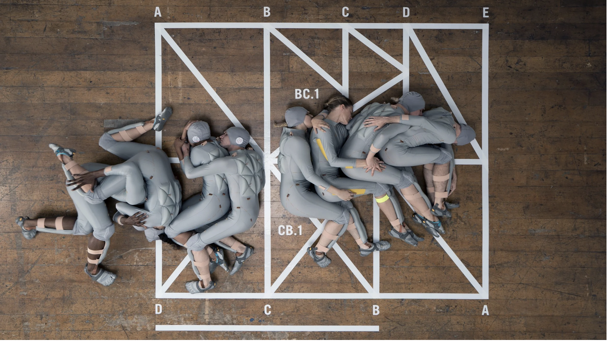
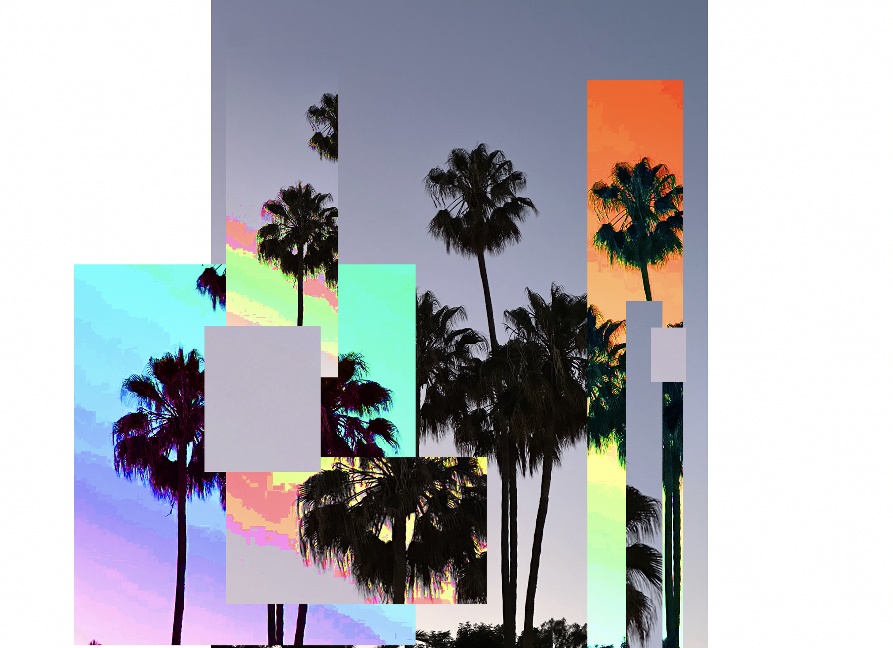
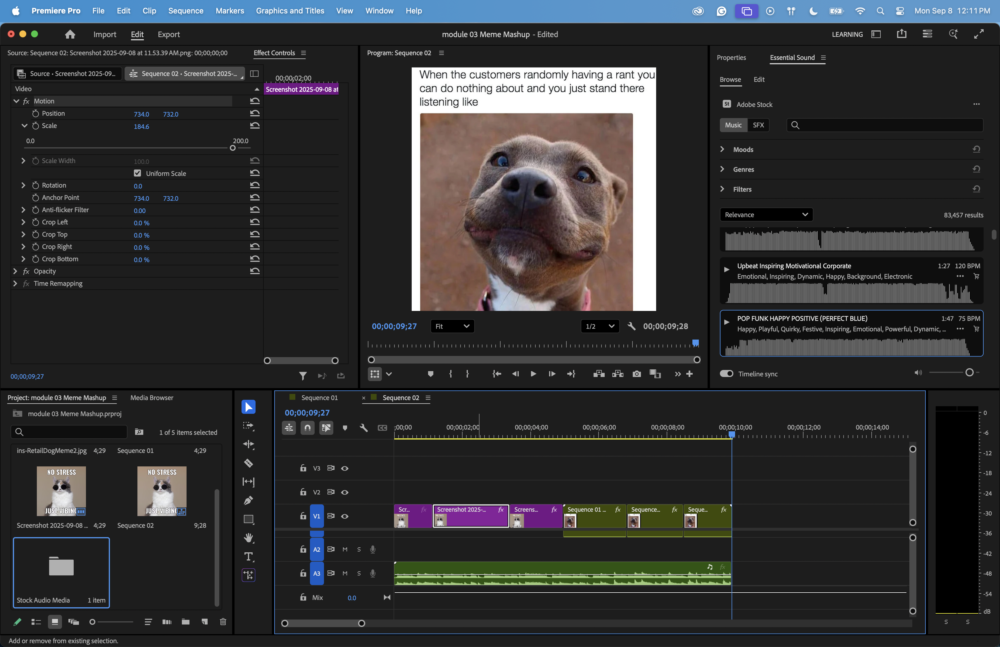
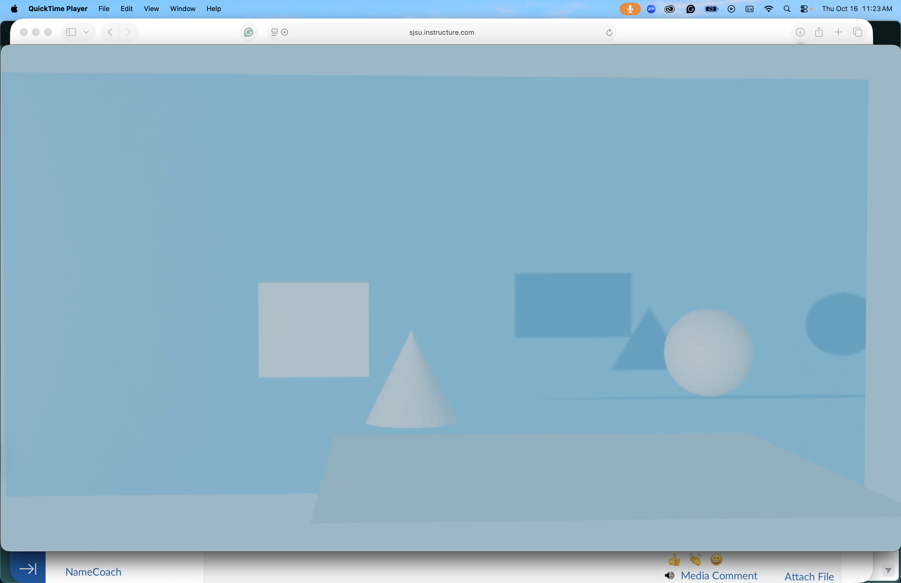

Projects

New Media Art Reflection
For Module 01, I researched three digital media artists: Camille Utterback, Lucy McRae, and Jonathan Monaghan. I learned how each of them uses technology, movement, and conceptual ideas to create new forms of digital art.
For this project I looked into what New Media Art really is and how artists use technology in creative ways. Each artist works differently, but they all mix digital tools with real life, movement, or emotion.
I connected to this kind of art because I’m really interested in color, shape, and the way digital tools can change how we communicate ideas. This assignment helped me understand the bigger picture of digital media and prepared me for all the projects we did later in the semester.

Glitch Art
For this assignment I intentionally “broke” a digital image using Photoshop and TextEdit. By opening the file as text and changing the code, the picture becomes distorted with stripes, color shifts, and fragments.
The piece connects to glitch culture and the idea that mistakes, errors, and corrupted files can still be beautiful and expressive.

Meme Mashup
This project combines multiple current memes into one composition. By layering images and text, I tried to show how memes move across the internet and how we remix them to react to pop culture, politics, and everyday life.

3D Object & Animation
I modeled this 3D object in Blender and experimented with different materials, lights, and camera angles. The goal was to create something that feels a little surreal but still grounded in a simple shape.
The final piece exists as both a still image and a short animation render.
HTML Hyperlink Narrative (Net Art)
For the net art assignment I built an interactive story using HTML links, images, and text. The viewer moves through the piece by clicking links, similar to an old school hypertext fiction.
Link to project: View my HTML hyperlink narrative
p5.js Drawing Tool
For this interactive assignment, I created a drawing tool using p5.js. The user can draw with different colors and brush effects directly in the browser, all generated through code.
Link to project: View my p5.js drawing tool
Self-Portrait (p5.js)
This self-portrait was created entirely with code using p5.js. The portrait uses shapes and colors to represent identity through generative visuals.
Link to project: View my coded self-portrait
Final Project – Glitched Emotions
For my final project, I created a series of ten glitch portraits representing stress, confusion, anger, sadness, and hope. These artworks use digital distortion, slicing, and RGB color shifting to visualize emotional fragmentation and intensity.
Link to project: View full final project